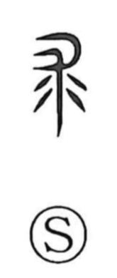

求

Uncategorized
Kun: motomeru | On: kyu, gu
to seek ・ to search ・ to request
Explanation
In its earliest form, 求 is a pictograph of a flayed animal hide. The related character 裘 names a fur garment made from such a hide, and 求 was originally the graph used for that garment. In ancient ritual practice, people would beat the hide to call upon the animal’s indwelling spirit to dispel curses and lessen calamity. From this act of urgent entreaty—the plea for relief and help—grew the verb sense of 求: to seek, to ask for, to demand the fulfillment of one’s desire.